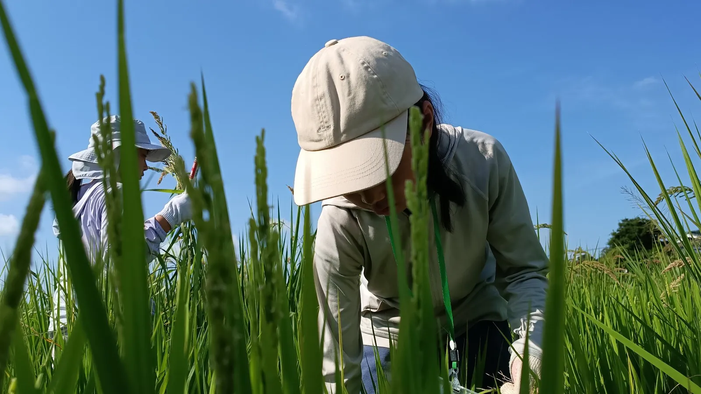
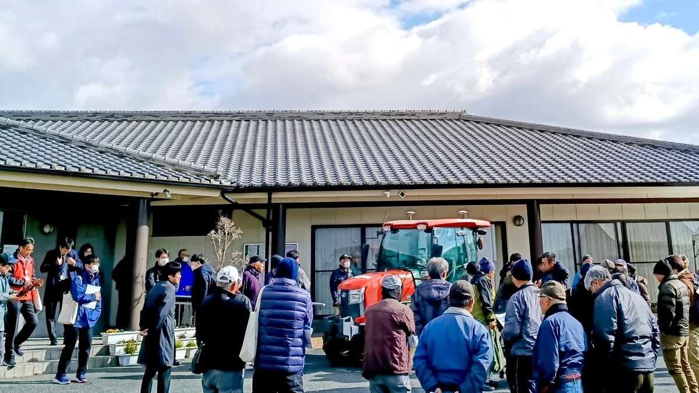

酒米「山田錦」の産地・兵庫県加東市東条地域から、農業と地域づくりの“等身大の記録”をお届けします。
成功談だけでなく、迷いや失敗も含めて発信しています。
産地の基礎知識は、解説ページ 山田錦の「特A地区」とは？ 東条が最高峰の産地といわれる理由 にまとめています。

農村RMOに採択されて思うこと。まちおこしは、全部が全部、成功事例じゃなくていい。
兵庫県加東市で発足した「とうじょうRMO」。過疎地域と新興住宅地、そして企業を巻き込んだ前例のないまちおこし（地方創生）のリアルな挑戦と、失敗をも資産にする覚悟をお伝えします。
記事を読む →
山田錦の高温障害対策：猛暑から酒米の王を守る4つの生存戦略
猛暑による山田錦の高温障害（白未熟粒・胴割れ・心白の乱れ）に、農家はどう立ち向かうのか。特A地区・兵庫県加東市東条地域の現場から、作期分散・水管理・地下パイプラインなど4つの対策と、高温に強い次世代酒米への希望をレポートします。
記事を読む →
RTK・VRSとは？自動操舵トラクターで変わる5つのこと ― 農業DX“数センチの革命”
農業DXの鍵となる「RTK」「VRS」技術。数センチの誤差をなくす自動操舵トラクターが、農作業の疲労軽減やコスト削減にもたらす5つの変化と、スマート農業が切り開く兵庫県加東市東条地域の未来を解説します。
記事を読む →
水田の水位管理を自動化する理由 ─ 自動運転だけでは農業は変わらない
兵庫県加東市岡本地区で進むスマート農業の実証。自動運転技術だけでは解決できない課題に対し、「水位管理」を軸にして農業と地方創生の未来を切り開く取り組みを解説します。
記事を読む →